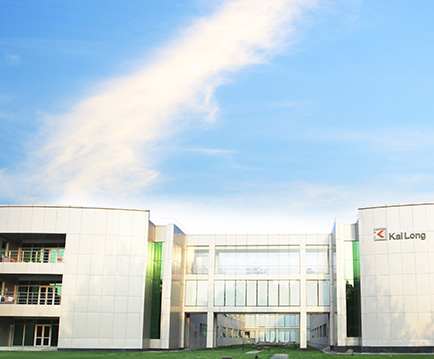
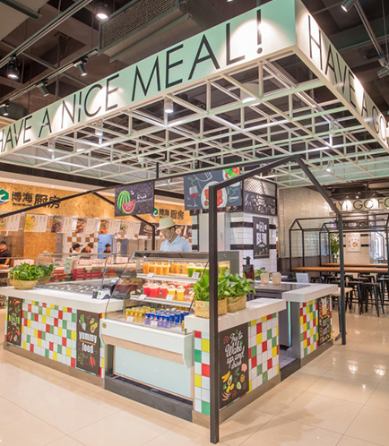
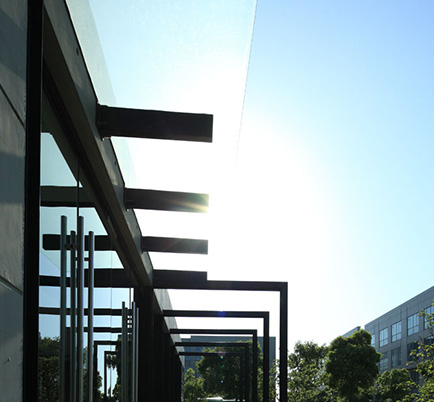
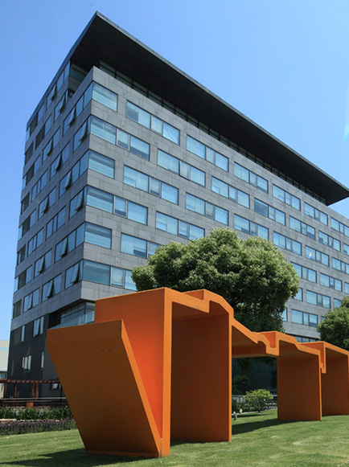
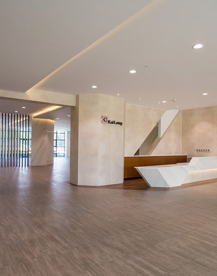

MORE
China’s leading investment management company, KaiLong Group (“KaiLong”) has successfully exited its investment in Kai Long ZLink recently. KaiLong ZLinkis located in Zhongguancun, Beijing with a total Gross Floor Area of 31,427 square meters.

MORE
China’s leading investment management company, KaiLong Group (“KaiLong”) has successfully exited its investment in Kai Long Info Building recently. KaiLongInfo Building is located in the core area of Zhangjiang Hi-Tech Park, Shanghai. With a total Gross Floor Area of 35,866 square meters, the project was acquiredvia KaiLong’s maiden US dollar investment vehicle.

MORE
KaiLong Group has successfully exited its Outbound Investment Fund I & II. The two funds invested into a portfolio of four cen- trally located serviced office assets in the City of London.

MORE
KaiLong Investment Management has purchased King's Hotel in Hong Kong's Wanchai, with plans to renovated the property into a commercial building. The 86,000 square foot (7,990 square meter) building is located in a bustling commercial area with many new developments nearby. This en-bloc transaction is purchased with car parks which is rare to find in Hong Kong.
MORE
KaiLong, a regional real estate investment fund, has acquired three en bloc properties in Sheung Wan, reflecting positive market sentiment in the area’s office sector amid Central’s tight vacancy environment. CBRE acted as the real estate consultant for the transaction totaling approximately HK$1 billion.

MORE
The enhancement of Kailong Info Building was completed re- cently. Located in core area of Shanghai Zhangjiang Hi-Tech Park and adjacent to the Zhangjiang monorail station, Kailong I nfo Building is an 8-storey office building with a total GFA of 24,238 square meters.